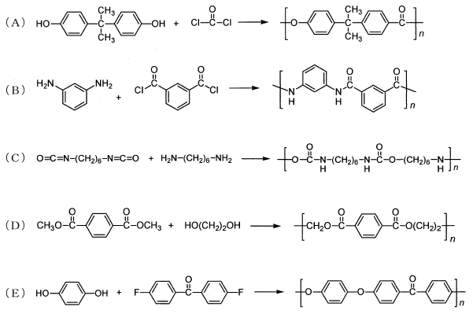

平成30年度 問14 高分子化学
次の重合による高分子合成において、正しい反応式の組合せとして、最も適切なものはどれか。ただし、脱離成分と鎖末端の化学構造式は省略してある。

①
（A）と（C）
②
（A）と（E）
③
（B）と（D）
④
（B）と（E）
⑤
（C）と（D）
正答
④ （B）と（E）
Aはポリカーボネートの反応式です。カーボネート基（炭酸エステル結合）は-O-C(=O)-O-を表します。ビスフェノールAとホスゲンで塩化水素を脱離して重合します。問題中の生成物は炭酸エステル結合ではなくエステル結合となっているため誤りです。
Bは芳香族ポリアミドであるアラミドの反応式です。m-フェニレンジアミンとイソフタル酸ジクロリドで塩化水素を脱離して重合します。
Cはポリウレアの反応式です。ウレア結合は-NH-C(=O)-NH-を表します。ジイソシアネートとジアミンが付加反応して重合します。問題中の生成物はウレタン結合-NH-C(=O)-O-を有しておりポリウレタンとなっていますので誤りです。
Dはポリエステルの反応式です。テレフタル酸ジメチルとエチレングリコールのエステル交換反応で重合します。問題中の生成物の左端にある-CH2-が不要です。
Eはポリエーテルエーテルケトン（PEEK）の反応式です。ヒドロキノンと4,4′-ジフルオロベンゾフェノンでフッ化水素を脱離して重合します。